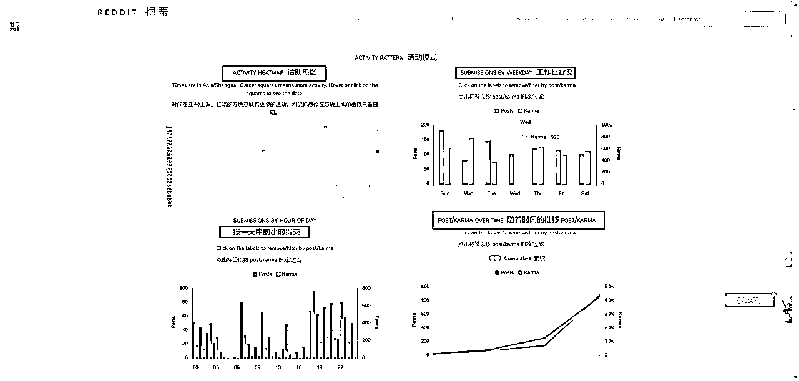
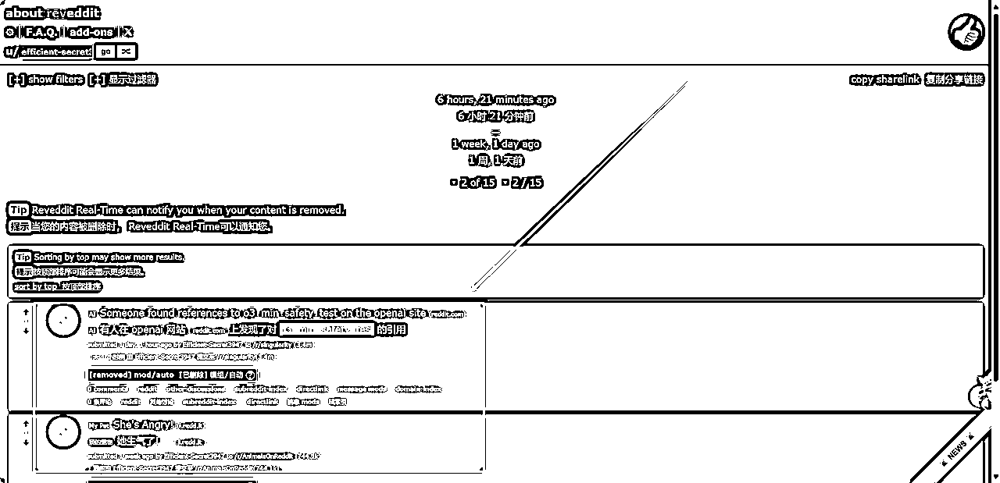

来源：https://dvsjtc6ey3f.feishu.cn/docx/HHgvdwaz1oi8i7xGiHdccD8ln6g
大家好，我是汤姆CC，一个喜欢探索各种有用工具的04大三学生，最近因为Reddit很有流量，然后老彭朋友圈发布是否有对reddit感兴趣的，我想，这不我的机会又来啦！于是又奋战几天，搞出来这个reddit工具箱。在这里感谢彩虹姐和彭哥的指导。本篇文章将从基础学习工具、社区发现工具、数据挖掘工具、灵感挖掘工具、研究与分析工具、内容创作工具、营销工具、其他工具8个部分来写。希望对大家运营自己的reddit有帮助，最后你如果有不错的reddit工具，欢迎评论区留言，让我把这个工具箱更加完善。
网站名称：Subrise
地址：https://subrise.co/en
网站标签：Reddit 社区攻略、Reddit 社区查询工具、Reddit 概率解析、Reddit 新手指南
主要作用：Subrise 提供丰富的 Reddit 使用攻略，包括社区参与的最佳实践、热门社区推荐和新手上手教程。同时，用户还可以通过工具查询各种 Reddit 社区的详细信息，如活跃度、内容主题、用户规模等。此外，网站还对 Reddit 中的基本概念和概率（如 Upvote/Downvote 算法、热榜排序机制）进行详细解释，帮助开发者和普通用户更深入地了解 Reddit 的运作逻辑。
Subreddit 名称: r/KarmaAssist
标签: Karma 提升、Reddit 活跃、社交互动、内容分享
地址：https://www.reddit.com/r/karmaassist/
主要作用：
r/KarmaAssist 是一个 Reddit 社区，专注于帮助用户提升 Karma（Reddit 的积分系统）。在 Reddit 平台上，Karma 是通过帖子或评论获得的点赞（upvotes）积累的，表示用户在社区中的贡献和影响力。这个 Subreddit 为那些希望快速增加 Karma 的用户提供了一个互动平台，通过分享内容、参与讨论和社区合作来提升活跃度。由于在Reddit发帖需要消耗Karma值，推荐 Karma互助中文社区，帮助海外独立开发者们互相帮助获得Karma，进而在其他频道发布帖子完成最初的增长
网站名称：Reddit Best Communities
网站标签：Reddit 社区推荐、热门 Subreddits、内容分类导航、社区参与指南
地址：https://www.reddit.com/best/communities/1/
概述：Reddit Best Communities 是 Reddit 用户快速发现热门社区和内容的捷径，特别适合想要挖掘目标用户所在社区、计划内容投放或研究热门趋势的开发者和营销团队。它为 Reddit 的深度使用提供了便捷的导航入口。
主要作用：
Reddit Best Communities 是一个由 Reddit 官方维护的页面，列出了最受欢迎的 Subreddits（子版块）和社区。这些社区按照主题和受欢迎程度排名，用户可以快速找到适合自己兴趣的热门社区，是 Reddit 新手和高级用户发现新内容的绝佳入口。
使用场景：
1.社区发现与分类：出海开发者可以通过这个页面找到与自己产品或目标用户相关的社区，为后续内容发布和推广活动打下基础。
2.内容创作选题参考：根据社区的主题和讨论内容，开发者或内容团队可以找到适合用户的热点话题，用于内容创作或运营活动。
3.营销活动策划：营销团队可以根据热门社区的规模和主题，选择目标社区策划广告投放或活动（如 AMA 活动）。
4.用户兴趣分析：帮助团队了解 Reddit 上不同社区的兴趣分布，优化自己的产品功能或内容策略。
来源：https://t.zsxq.com/BhWzI
网站名称: Redditlist
网站标签: 社区导航、内容发现、Reddit、子版块推荐
地址：https://redditlist.com/
主要作用:
Redditlist 是一个工具网站，帮助用户发现和了解 Reddit 上最热门和活跃的子版块（subreddits）。它根据受欢迎程度、订阅人数和活跃度对子版块进行分类和排名，方便用户快速找到自己感兴趣的内容或目标受众所在的社区。
使用场景:
1.市场调研: 针对海外市场的内容推广，寻找与产品或服务相关的高活跃度社区，用于品牌推广或潜在用户互动。
2.内容营销: 确定目标受众所在的子版块，优化内容营销策略，提升品牌知名度。
3.用户分析: 了解不同社区的用户兴趣、话题方向，为产品设计和推广定位提供参考。
4.灵感挖掘: 获取子版块的热门趋势或新兴社区，为产品或服务的创新提供思路。
5.Reddit 广告投放: 确定最佳投放社区，提升广告点击率和转化率。
网站名称：FindAReddit
网站标签：Reddit 社区搜索、Subreddit 发现工具、社区分类导航、营销推广资源
地址：https://www.findareddit.com/
概述：FindAReddit 是一个高效的 Reddit 社区搜索工具，尤其适合出海开发者、营销人员和研究人员。它能够帮助用户快速找到精准的 Reddit 社区，并提供详细的社区信息，为产品推广、市场调研和用户互动提供全方位支持。
主要作用：
FindAReddit 是一款专注于 Reddit 社区搜索和发现的工具，它可以帮助用户根据关键词快速找到与特定主题相关的 Subreddits（子版块）。工具还提供社区活跃度、订阅者数量和热门话题等信息，是开发者和营销人员进行市场研究和内容投放的理想工具。
使用场景：
1.精准社区搜索：开发者可以通过输入关键词找到与自己产品或服务相关的社区，用于目标用户群定位和互动。
2.内容推广与投放：营销团队可以利用工具寻找适合的 Subreddits 进行内容发布或广告投放，从而最大化触达目标用户。
3.市场调研与热点发现：工具能够显示社区内热门主题和活跃度，帮助团队了解 Reddit 用户的兴趣分布和趋势。
4.竞品分析：找到竞品相关的 Subreddits，研究用户的反馈与讨论，为优化自身产品或服务提供数据支持。
网站名称：Subreddit Stats
网站标签：Reddit 数据分析、社区统计、受众洞察、Subreddit 热度追踪
地址：https://subredditstats.com/
主要作用：Subreddit Stats 是一个 Reddit 社区统计和分析工具，专注于提供 Reddit 各个子版块（Subreddits）的详细数据分析，包括活跃用户数、帖子发布频率、热门话题和投票趋势等信息。开发者和营销人员可以通过这个工具了解社区的活跃度、趋势以及用户行为，从而制定更精准的内容和推广策略。
使用场景：
1.社区数据分析：开发者可以通过 Subreddit Stats 获取目标社区的关键数据，如用户增长趋势、发帖活跃时间等，为内容发布和推广选择最佳时间和地点。
2.目标市场研究：出海团队可以分析与自身产品或服务相关的 Subreddits，挖掘用户需求和兴趣点，优化产品设计或市场策略。
3.热点追踪与话题选择：利用工具的热门帖子统计功能，开发者和内容创作者可以找到社区内最受欢迎的内容主题，提升内容的相关性和吸引力。
4.广告与营销规划：营销团队可以根据社区的活跃度和用户画像，选择最佳的社区和投放时间，优化 Reddit 广告的 ROI。
5.竞品分析：通过对竞品相关社区的统计分析，开发者可以了解目标用户对竞品的反馈和讨论重点，为自己的产品改进提供参考。
网站名称: RedSim
网站标签: Reddit社区可视化、子版块关系分析、社区探索、数据可视
地址：https://anvaka.github.io/redsim/
网站主要作用:
RedSim 是一个用于可视化展示 Reddit 子版块（subreddit）之间关系的工具，通过图形化的方式展示相关子版块如何连接，帮助用户探索 Reddit 的社区结构，发现新社区。用户输入一个感兴趣的子版块后，可以看到与之相关的其他子版块，以及它们之间的关系强度。
使用场景:
1.目标社区探索:输入一个核心子版块，发现与之相关联的其他子版块，寻找潜在的目标社区用于内容分发或广告投放。
2.社区结构研究:了解 Reddit 子版块的分类和相互联系，从中挖掘特定主题或兴趣领域的生态系统。
3.市场调研和扩展:通过探索与目标市场或产品相关的子版块，识别更多可能感兴趣的受众群体。
4.内容创作灵感:根据不同子版块的主题，找到创作新内容的切入点，提升内容的针对性和受众互动率。
5.竞品分析:通过分析竞争品牌活跃的子版块，找到其他潜在的推广社区，优化营销策略。
网站名称: Keyworddit
网站标签: Reddit关键词研究、SEO工具、内容创作、市场调研
地址：https://www.highervisibility.com/seo/tools/keyworddit/?utm_source=toolbaseio
网站主要作用:
Keyworddit 是由 Reddit 开发的一款关键词生成工具，提供与人们搜索的关键词相关的搜索量数据和关键词创意。该工具通过提供人们已经在搜索的创意来帮助你改进 SEO。该工具使用起来非常简单，只需输入一个关键词，然后选择你想要查找的相关 subreddit，你就会得到一个每月排名的关键词列表。你还可以通过点击关键词创意旁边的上下文来查看 Google 搜索结果页面，这样你就可以看到 Reddit 内部与关键词相关的主题和帖子。Keyworddit 还让你可以轻松导出所有关键词列表。
网站名称: Reddit Insights
网站标签: Reddit关键词研究、SEO优化、内容创作、市场调研
地址：https://redditinsights.ai/
网站主要作用:
Reddit Insights 是一款专门用于在 Reddit 上进行关键词研究的工具。它通过抓取特定子版块中与所选关键词相关的问题，整理并输出清晰的结果，帮助用户了解在特定主题下，社区中常见的疑问和讨论点。这对于内容创作者、SEO 专家和市场研究人员来说，能够提供独特的见解，挖掘被忽视的关键词和内容创意。
使用场景:
1.SEO 优化:通过 Reddit 用户的真实提问，发现长尾关键词，提升网站内容的搜索引擎排名。
2.内容创作:获取社区中用户关注的话题和问题，为博客、文章或视频提供新颖的内容创意。
3.市场调研:了解目标受众的需求和痛点，指导产品开发和市场策略。
4.竞争分析:通过 Reddit 的讨论，分析竞争对手的产品或服务在用户中的反馈和评价。
5.社区参与:发现用户关注的热点话题，积极参与讨论，提升品牌在社区中的影响力。
网站名称：Reddit Insights Finder
网站标签：Reddit 数据挖掘、关键词分析、社区洞察工具、热门话题发现
地址：https://www.ideawip.com/tools/reddit-insights-finder
主要作用：Reddit Insights Finder 是一款专注于帮助用户在 Reddit 上发现热门社区、分析关键词趋势和获取话题洞察的工具。它可以通过关键词查询 Reddit 上的热门讨论和活跃社区，同时生成数据报告，为用户提供详细的内容洞察。它有两个工具，一个是洞察器，用于查找reddit上的需求，一个是验证期，它会根据你的想法来做一个评估，另外上面还有别人的想法，可以看看
使用场景：1.Reddit 社区研究与选择：出海开发者可以利用工具查询与自己的产品或服务相关的社区，发现目标用户活跃的地方，进行精准推广。2.关键词分析与热点追踪：营销人员可以通过关键词分析找到 Reddit 上的热门话题、用户需求以及讨论的趋势，为内容创作或产品开发提供灵感。3.市场调研与用户需求分析：工具可以帮助团队分析 Reddit 用户在特定领域内的需求和痛点，例如针对某个行业的帖子数据分析，帮助优化产品或服务。
网站名称: IdeaPicker
网站标签: 创业想法、创意筛选、市场验证、项目开发
地址：https://ideapicker.io/ideas
主要作用:
IdeaPicker 是一个为创业者和开发者提供的在线工具，用于发现和筛选创业想法。平台通过系统化的评分机制和市场验证帮助用户选择最具潜力的创意。用户可以提交自己的想法，或浏览社区内已有的想法，以此找到灵感或验证可行性。
核心功能
1.创业想法评分：平台提供一个结构化的评分系统（如市场需求、可行性、盈利潜力等），帮助用户评估自己的想法或社区内其他想法的优劣。
2.创意库：用户可以浏览和搜索平台上已发布的想法库，从中寻找灵感或学习他人的思路。
3.市场验证：为用户的创意提供初步的市场验证，通过社区投票和反馈，帮助识别市场需求。
4.筛选工具：提供多维度筛选功能（如行业、目标受众、盈利潜力等），快速找到符合自己兴趣的创意。
5.社区互动：用户可以对他人的想法发表评论、点赞或提供改进建议，增加社区的互动性和价值。
网站名称: IndieIdeas
网站标签: 创业想法、创意分享、市场验证、产品开发、创业社区
地址：https://indieideas.io/
主要作用:
IndieIdeas 是一个为创业者、开发者和创意人士提供的社区平台，用户可以在此分享、发现和验证创业想法。平台致力于帮助个人创业者（Indie Makers）从创意到执行的全过程，通过市场验证、用户反馈和资源共享，让想法更有可能落地成为可行的产品或服务。
核心功能：
1.创业想法分享：用户可以提交自己的创业想法，分享自己的灵感，并获取社区的反馈和建议。
2.想法验证（Idea Validation）：社区成员可以对创业想法投票或提供评论，从而帮助评估市场需求和可行性。
3.想法发现：浏览其他用户提交的创业想法，激发自己的灵感，或者寻找合作机会。
4.市场研究支持：平台提供关于创业趋势和市场需求的洞察，帮助用户更好地定位和发展自己的创意。
下面几个找产品思路的网站是来自刘小排老师的帖子，对想做产品的圈友应该有帮助，建议再把小排老师的帖子看一遍：https://articles.zsxq.com/id_qerx7rre5z5x.html
网站名称: Product Hunt
标签: 产品发布、创业工具、技术趋势、用户社区、产品推广
地址：https://www.producthunt.com/
网站简介：
Product Hunt 是一个专注于发现和推广新产品的在线社区平台，涵盖技术、软件、硬件、应用程序和创业领域的新创意。它为开发者、设计师、创业者和早期用户提供了一个展示、探索和互动的空间，同时也是产品发布和获取早期用户反馈的首选平台之一。
优点：
1.早期用户获取: 吸引对新技术感兴趣的用户，建立初期用户群体。
2.市场验证: 通过社区的反馈了解产品的市场潜力和改进方向。
3.高质量社区: 聚集了创业者、投资者、技术爱好者等优质用户群体。
4.趋势分析: 每日热门榜单提供了对技术和市场趋势的实时洞察，获取灵感。
网站名称: Hacker News - Show HN
标签: 创意展示、产品发布、技术社区、创业分享、开发者工具
地址：https://news.ycombinator.com/show
简介：
Hacker News 的 Show HN 页面是一个专门为开发者、创业者和创意人士提供的分享平台。用户可以在这里展示他们正在开发的项目、新产品、工具或创意想法。该页面是 Hacker News 社区的重要组成部分，吸引了大量对技术和创业感兴趣的用户，提供早期反馈和讨论。
优点：
1.免费推广：Hacker News 社区拥有大量技术爱好者和潜在用户，是一个免费的宣传和推广平台。
2.真实反馈：社区成员提供的建议通常具有高质量和实际意义，有助于优化产品或解决技术问题。
3.快速验证创意：在项目初期快速获取市场和用户的真实反馈，帮助优化发展方向。
网站名称: SEOBox l
标签: SEO工具、域名数据、数字营销、网站优化
地址：https://seo.box/referring/
工具简介
SEO Box 是一款专注于简化 SEO 优化流程的一站式工具，它帮助用户研究和追踪哪些域名指向他们的网站（即“推荐域名”），并提供详细的数据来优化搜索引擎优化（SEO）策略。通过这一工具，用户可以了解链接的来源质量、数量以及其对网站流量和权重的影响。
优点：
1.帮助优化 SEO 策略：通过分析推荐域名的数据，用户可以精准优化外链建设，提升网站在搜索引擎中的表现。
2.高效竞争分析：发现竞争对手的外链资源，快速找到值得争取的链接机会。
3.防止不良链接：识别低质量或有害的推荐域名，及时采取行动避免搜索引擎处罚。
4.提高内容曝光率：通过了解哪些域名感兴趣于链接目标内容，优化内容策略以吸引更多外链。
来源：生财有术圈友、著名航海教练哥飞 。 这里收集的是通过Stripe平台进行收款、每个月最赚钱的Top 100产品。
网站名称: Toolify
标签: AI工具平台、人工智能资源、生产力工具、技术应用
地址：https://www.toolify.ai/zh/
简介：
Toolify 是一个人工智能工具集合平台，专注于为用户提供各种基于 AI 的工具和解决方案，涵盖多个领域，如生产力提升、内容创作、编程辅助、图像处理等。它帮助用户发现和使用最新的 AI 技术，提升效率并解决特定问题。
来源：生财有术知名大佬、超级产品经理阳光杉木 。 这也是世界上第二大的AI产品导航网站。
网站名称: There’s An AI For That
标签: AI 工具大全、人工智能资源、生产力工具、技术创新、创意工具
地址：https://theresanaiforthat.com/
简介
"There’s An AI For That" 是一个综合性的平台，专注于收集和分类全球最新的 AI 工具与解决方案。无论是个人用户还是企业团队，该平台都能帮助用户快速找到满足特定需求的人工智能工具，并追踪行业的最新趋势。该平台以其庞大的工具数据库和直观的搜索体验而著称。
网站名称: SnooSnoo
网站标签: Reddit 用户数据分析、用户行为洞察、社交媒体工具
地址：https://snoosnoop.com/
主要作用:
SnooSnoo 是一款专注于 Reddit 用户数据分析 的工具，可以帮助用户深入了解特定 Reddit 用户的行为模式、兴趣爱好和互动习惯。通过输入 Reddit 用户名，SnooSnoo 提供该用户在 Reddit 上的帖子历史、评论数据、活跃时间和常访问的子版块等信息。这些数据可以用于用户研究、行为分析以及内容优化。
优点
1. 用户活跃度分析
确定用户的活跃时间，便于针对性地互动或在其活跃时段发布内容。
有助于品牌或内容创作者找到目标用户群体的高效接触时间。
2. 兴趣图谱
了解用户的兴趣领域，便于为目标用户推荐更精准的内容。
对市场营销团队来说，可以识别用户所在的社区，进行更精准的内容投放。
3. 内容偏好分析
帮助分析用户倾向于讨论的主题（如科技、娱乐、政治）。
用于优化内容创作策略，使之更贴近目标用户的需求和兴趣。
相似网站
网站名称: Reddit Metis
网站标签: Reddit 数据分析、子版块研究、用户行为分析、内容优化工具
地址：https://redditmetis.com/
主要作用:
Reddit Metis 是一款专注于 Reddit 平台数据分析的工具，帮助用户分析 Reddit 子版块的内容趋势、用户活跃时间、互动数据，以及帖子和评论的表现。这款工具对版主、营销人员、内容创作者以及品牌推广人员来说非常有用，可以帮助优化发帖策略、提升社区参与度以及分析竞争对手。
优点：
1.子版块数据分析：提供目标子版块的详细数据，包括发帖数量、用户活跃时间分布、互动频率等。帮助用户了解哪些话题在特定子版块中最受欢迎。
2.用户活跃时间分析：分析目标子版块中用户的活跃时间段（按小时、每日或每周）。识别最佳发帖时间，确保帖子获得最大曝光率和参与度。
3.内容趋势跟踪：提取子版块中点赞最多的帖子及其内容类型（文字、图片、视频）。研究哪些内容和标题最吸引用户关注。
4.关键词和话题分析：查看子版块中用户常讨论的关键词和热门话题。帮助用户发现潜在的内容方向和用户需求。
5.对比分析：支持对多个子版块进行比较，分析不同子版块的活跃度、内容特点和用户行为差异。历史数据检索
提供子版块的历史数据，包括发帖和评论的表现。帮助用户分析长期的趋势变化。


工具名称: Postpone
标签: 社交媒体调度、内容管理、营销工具、自动化、定时发布
地址：https://www.postpone.app/scheduled
简介
Postpone 是一款reddit管理工具，专注于帮助用户通过定时功能在多个平台上发布内容。它特别适合营销人员、内容创作者和品牌，通过简化社交媒体调度流程来提高工作效率和内容覆盖范围。对你的账户数据进行分析，另外它还有一些小工具，比如标题生成。
网站名称: Later for Reddit
网站标签: Reddit子版块分析、内容优化、发帖策略、最佳时间建议
地址：https://dashboard.laterforreddit.com/analysis
主要作用:
该工具是 Later for Reddit 的子版块分析功能，专注于分析 Reddit 特定子版块的发帖趋势和用户行为。用户可以输入子版块名称（例如 website），并查看该子版块的帖子活跃时间分布、点赞趋势、评论活跃度以及热门内容等数据。通过这些分析，用户可以找到最佳发帖时间，从而最大化帖子的曝光率和互动效果。
优点：
1.用户活跃时间分析：提供用户在一天或一周中最活跃时间的详细分布数据，帮助确定最佳发帖时间。
2.点赞与评论趋势：展示不同时间段内帖子点赞数和评论数的变化趋势，用于评估互动效果。
3.热帖分析：列出子版块中点赞最多的帖子，帮助识别用户喜好的内容和标题风格。
4.发帖策略建议：根据历史数据，推荐发帖时间和内容优化方向。
相似工具：
网站名称: Delay for Reddit
网站标签: Reddit定时发布、内容管理、自动化工具、时间优化
地址：https://www.delayforreddit.com/
主要作用:
Delay for Reddit 是一款专注于 Reddit 帖子定时发布的工具，允许用户提前安排帖子，并在指定的时间自动发布到目标子版块（subreddit）。它特别适合需要跨时区管理内容的团队、内容创作者和社区运营者，帮助优化内容发布时间，提高帖子的曝光率和用户参与度。
网站名称: Redective
网站标签: Reddit用户分析、数据挖掘、行为洞察、社区研究
地址：http://www.redective.com/
主要作用:
Redective 是一款针对 Reddit 用户的行为分析工具，通过输入 Reddit 用户名，可以获取用户的发帖历史、评论记录、活跃的子版块以及使用的关键词等详细信息。它帮助用户了解 Reddit 用户的兴趣、活动模式以及影响力。
使用场景:
1.用户行为分析:分析目标用户的发帖和评论记录，提取其活跃时间、常参与的子版块和兴趣领域。了解用户的内容2.偏好和常用语言风格，用于内容创作或营销定位。
3.目标受众研究:帮助出海团队研究 Reddit 上的潜在用户群，找到他们活跃的子版块和主要兴趣点。
4.社区参与分析:评估用户在 Reddit 社区的参与度及其在特定子版块的活跃情况，为用户画像构建提供依据。
5.竞品调研与监控:通过分析竞争品牌的用户或社区，了解用户对竞品的需求和反馈，为自身产品改进提供参考。
6.市场推广:针对活跃用户开展定向推广活动，提升品牌曝光和用户参与度。
平台名称: Canva
标签: 平面设计、在线工具、视觉内容创作、演示文稿、社交媒体设计
地址：https://www.canva.cn/
简介
Canva 是一款简单易用的在线图形设计工具，适用于个人用户、团队和企业。它为用户提供了广泛的设计模板和资源库，让没有设计经验的人也能轻松创建专业级的视觉内容。无论是社交媒体海报、简报、名片、视频、还是营销材料，Canva 都可以快速生成高质量的设计。发布reddit帖子，好看的图片更靓眼
闲鱼几元就能买到终身服务
网站名称: ShotEasy
网站标签: 截图美化、在线工具、图像编辑、浏览器扩展
网站主要作用:
ShotEasy 是一款免费的在线截图美化工具，用户可以直接在浏览器中对截图进行编辑和美化。 它提供了添加背景、边框、阴影和水印等功能，使截图更具专业和视觉吸引力。 此外，ShotEasy 还支持裁剪、调整大小和添加注释，满足用户对图像编辑的多种需求。
使用场景:
1.内容创作:为博客、社交媒体或演示文稿创建精美的截图，提升内容质量和吸引力。
2.产品展示:在产品推广中使用美化后的截图，突出产品特点，增强视觉效果。
3.社交媒体分享:为社交媒体帖子创建引人注目的图片，增加互动率和关注度。
网站名称: Reddit Preview
网站标签: Reddit 预览工具、广告预览、内容优化、创意测试
地址：https://redditpreview.com/
主要作用:
Reddit Preview 是一个帮助用户预览 Reddit 帖子、广告或内容排版效果的工具。它允许用户在正式发布前模拟帖子显示效果，以确保内容的格式、设计和视觉效果符合 Reddit 的规范和用户体验。这对广告主、内容创作者和版主特别有用，可以减少因格式问题导致的用户体验下降。
优点：
帖子预览：用户可以在发布前查看帖子内容（包括标题、文本、图片或视频）的实际显示效果。
广告预览：模拟 Reddit 广告（如展示广告、文本广告）的展示效果，确保设计和信息传递符合预期。
Markdown 格式测试：支持 Markdown 格式预览，方便用户检查格式是否正确（如标题、加粗、超链接等）。
网站名称：GummySearch
网站标签：Reddit 用户洞察、市场分析工具、目标受众研究、Reddit 营销优化
地址：https://go.gummysearch.com/audiences/
主要作用：
GummySearch 是一款基于 Reddit 的受众分析和市场研究工具，专注于帮助用户发现目标受众的需求、痛点和热门话题。它通过分析 Reddit 上的讨论数据，为产品开发、内容创作和营销策略提供深刻洞察。用户可以利用它轻松找到潜在客户群并制定针对性的运营计划。
使用场景：
1.受众分析与需求挖掘：出海开发者可以通过 GummySearch 发现 Reddit 上的潜在用户及其关心的问题，进一步调整产品设计和用户体验。
2.市场研究与热点追踪：营销团队利用工具追踪 Reddit 上的热门话题、关键词趋势，精准定位用户的兴趣点和需求。
3.社区选择与活动策划：帮助开发者筛选适合的 Reddit 社区（Subreddits），规划有效的推广活动，如 AMA（Ask Me Anything）或讨论帖发布。
4.内容创作灵感：内容创作者可以通过工具提取 Reddit 上用户的常见提问和话题，创作更有针对性和吸引力的内容。
5.竞品分析与策略优化：出海团队可通过 Reddit 数据分析了解竞争产品的受众分布及反馈，优化自身产品和市场策略。
来源：https://t.zsxq.com/FTjOB
网站名称: Reddit Ads Dashboard
网站标签: Reddit广告管理、广告投放平台、用户增长、社交媒体广告
地址：https://ads.reddit.com/account/g7day0x3eyfn/dashboard?landing=true
主要作用:
Reddit Ads Dashboard 是 Reddit 官方提供的广告管理平台，用户可以通过该工具创建、管理和优化广告活动，以接触 Reddit 的特定用户群体。广告主可以根据目标受众的兴趣、行为和所在的子版块（subreddit），精准投放广告，从而实现品牌宣传、流量增长和销售转化。
优点：
1.广告创建:提供简单直观的广告创建流程，包括文本广告、图片广告和视频广告等多种格式选择。可选广告目标（如品牌认知、流量、转化等）来优化广告表现。
2.精准受众定位:基于用户的兴趣、地理位置、设备类型等多维度精准定位目标受众。支持根据特定子版块选择广告受众，以确保广告内容与目标用户的兴趣匹配。
3.实时广告分析:提供详细的数据分析功能，包括广告点击率（CTR）、转化率（CVR）、展示次数和花费等指标.方便广告主实时调整广告投放策略，提升广告表现。
网站名称: Reddit Saved
网站标签: Reddit工具、内容管理、收藏管理、数据备份
地址：https://reddit-saved.com/
主要作用:
Reddit Saved 是一款用于管理和浏览用户在 Reddit 上保存的帖子和评论的工具。它能够将用户在 Reddit 上保存的内容分类整理，以更方便地查看、搜索和管理。这对于活跃的 Reddit 用户来说，是一个非常实用的辅助工具。
使用场景:
1.内容存档和分类:用户可以轻松整理和管理保存的帖子和评论，避免在大量内容中迷失，特别适用于内容创作者和市场研究者。
2.灵感收集和分析:出海企业可以使用 Reddit Saved 工具整理与目标用户群相关的内容（例如行业趋势、用户反馈等），为产品改进和市场定位提供数据支持。
网站名称: Reveddit
网站标签: Reddit工具、内容审核、已删除帖子与评论、社区透明度
地址：https://www.reveddit.com/about/
网站主要作用:
Reveddit 是一个专注于 Reddit 内容透明度的工具，允许用户查看被删除的帖子或评论。无论是被作者本人删除，还是被版主或自动化工具删除，Reveddit 都能帮助用户追踪这些内容。通过它，用户可以更深入地了解 Reddit 上的内容审核和删除行为的模式。
使用场景:
1.内容审查透明度:用于查看被 Reddit 删除或隐藏的内容，分析删除的原因（如是否违反社区规则）。
2.用户行为追踪:如果某个 Reddit 用户的帖子或评论频繁被删除，可以通过 Reveddit 检查内容是否存在违规或不当行为。
3.数据恢复和内容挖掘:如果自己的帖子或评论被删除，可以通过 Reveddit 找回并检查内容。
4.竞品分析:查看竞争对手的内容是否有被社区删除的情况，分析其内容策略的优缺点。

网站名称: Reddit Enhancement Suite (RES)
网站标签: Reddit增强工具、浏览器扩展、用户体验优化、内容管理
网站主要作用:
Reddit Enhancement Suite (RES) 是一个功能强大的浏览器扩展，专门为提高 Reddit 用户体验而设计。它通过提供额外的功能（如帖子过滤、快捷操作、自定义主题等）优化 Reddit 的使用体验。RES 是一款适用于 Reddit 高级用户和社区管理者的多功能工具。
使用场景:
1.提高内容浏览效率:添加无限滚动功能，让用户更顺畅地浏览帖子。支持帖子过滤，屏蔽特定类型的内容或关键词，优化信息流。
2.用户行为管理:提供保存用户历史记录、快速访问常用子版块等功能，便于内容管理和导航。
3.个性化 Reddit 界面:允许用户自定义 Reddit 的主题、布局和样式，提升视觉体验。
4.多账户管理:支持多账户快速切换，方便用户在不同身份之间快速切换。
工具名称: SnapAny
标签: Reddit视频下载、图片下载、内容保存、在线工具
工具简介
SnapAny 是一款专注于帮助用户从社交媒体平台（如 Reddit）下载视频和图片的在线工具。它操作简单、快速高效，支持多种格式的内容保存，方便用户离线使用或二次分享。对于需要保存 Reddit 上精彩视频或图片的用户来说，SnapAny 是一个非常实用的工具。
如果大家有需要总结归纳的工具，欢迎评论交流，我会帮大家找到一些有用的工具，总结成工具箱。最后觉得有帮助的话，就点个赞吧！